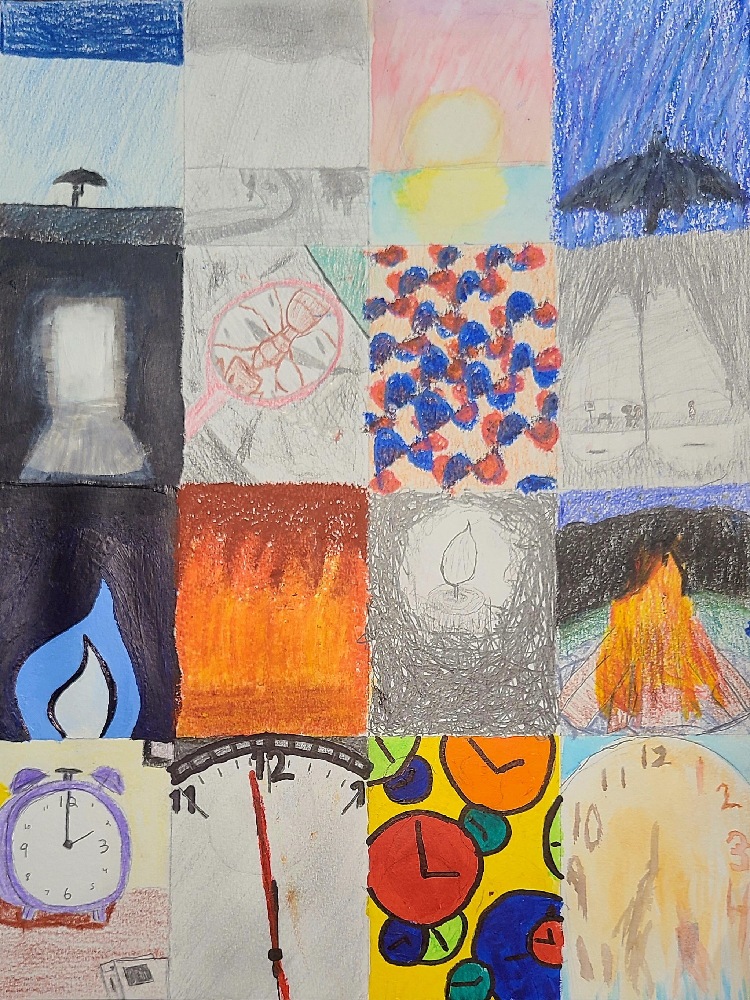

Who are you?
My name is Alfred Bassett, but I go by my middle name, David. I'm a
young (21 year old) software developer yearning to learn more! I
currently live in Wisconsin, but I'm excited to see where Computer
Science will take me!
Why do you like software?
When I was a kid, I really liked video games. While playing a game on
an NES Emulator, I discovered the hex editor and had fun messing
around with it. Being a kid, I wanted to learn more about what those
numbers meant and how to make changes to do things. That kinda paved
the way to where I am today.
Lake Mendota (Madison, Wisconsin)

My magnum opus from my art class
What exactly do you know?
I double-majored in Computer Science and Computer Engineering at the
University of Wisconsin-Madison. I recently graduated this December. I
enjoyed both practical and theoretical software as well as the actual
hardware and circuitry used to power code. I went as high level as
React and Python to as low level as assembly (and Verilog, if that
counts). In terms of practical computer science, I took courses
regarding Operating Systems, Compilers, Frontend Development, and
Artificial Intelligence. For theoretical computer science, I took
Discrete Math and an Algorithms Class. For hardware, I synthesized
fpga's, simulated my own CPU hardware, designed custom PCBs, and did
some embedded stuff on a couple of Infineon PSoC6's.
What's your favorite part of coding? Why do you do it?
Computer Science is like a treasure trove that changes and grows
exponentially over time. I don't think any other majors are quite like
that (besides economics, medicine, and STEM). Since I really like both
learning and exploring new things, I seem to fit right in! It also
helps that I really like math and science. To that point, I think I
was one of probably 10 people in my algorithms class that actually
enjoyed what we did!
I tend to think that if you understand common coding paradigms,
programming languages come very naturally as a result.
I also don't really have a favorite coding language. What I use changes
from project to project. If I care more about performance and want to
reduce binary size, I'll use C or C++. If I just want to write up code
quickly and don't really care about how well the CPU runs it, I'll use
Python. If I want to be super careful about my memory usage and don't mind
'fighting the compiler', I'll use Rust. For frontend stuff, Svelte has
really been growing on me. I like how it feels super simiar to vanilla
while being around 10x as powerful (without a virtual DOM, too)!
What are some of your projects?
There's been a lot of fun projects I've done. Unfortunately, I don't
think I can legally share the source code for most of them, due to
university and company policy. But as some examples:
Some cool school projects:
-
An interpreter and a compiler for a custom programming language
(Java)
-
A CPU, with caching and pipelining, for a custom architecture
(Verilog)
-
A frontend for a Chatroom Web/Mobile App (React/React Native, the
backend was provided)
-
A desktop GUI application to find and give the fastest route from
one place on campus to another (Java/JavaFX)
-
A computer player that is really good at
Teeko (Python,
minimax with alpha/beta pruning)
-
A
LeNet-5
clone (Python/Pytorch, trained with CIFAR100)
- ... More cool stuff that I'm forgetting
Some cool side/hobby/personal projects:
-
A cycle-accurate NES emulator for a few common mappers (C++, lost to
SSD death)
-
The website for
New Hope Center, Inc. (Vue
frontend, Node backend)
-
Stenography Demos for the UW-Madison CyberSecurity club (Python)
-
PR's regarding testing and CI for the UW-Madison Quantum Compiler
Group (Python)
-
A
terminal app
for viewing .obj 3d files (C++)
- ... and more to come!
 Someone forgot to increment the y-index for the PPU and used bgr
instead of rgb!
Someone forgot to increment the y-index for the PPU and used bgr
instead of rgb!
Recently, I've been on the job hunt! Because my interests in CS are broad,
I'm open to quite a lot, and I'm excited to see what I can learn and
contribute to in a work environment!
What else do you like?
I really like high-level math and modern physics! While I didn't take
too many classes on it in my coursework, I really like learning how
the world around us works!
I also really like tennis! I play a lot with my brother, and it's a
great passtime when the weather is warmer.
I'm a big fan of nature! I like walking outside a lot and taking it
all in. I really love the wintertime, especially when it's snowing
(which always happens in Wisconsin). It's pretty crazy how beautiful
the earth we live on can get.
I got bored after finals, so I made a snowman!